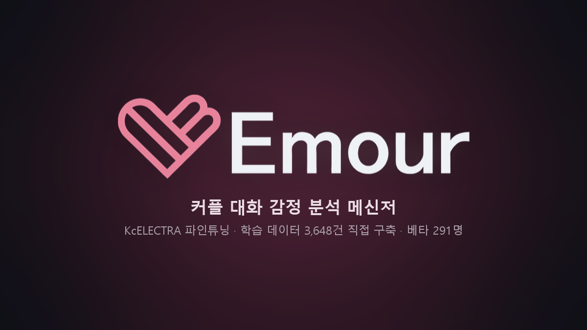
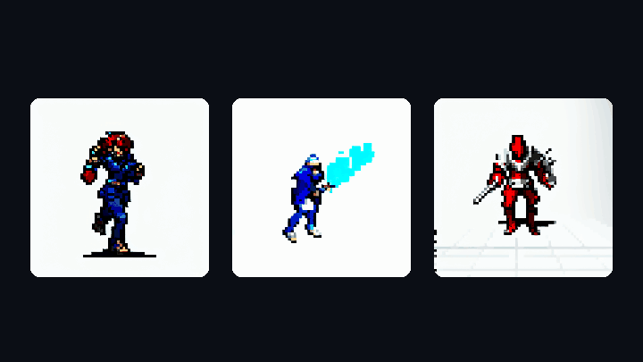
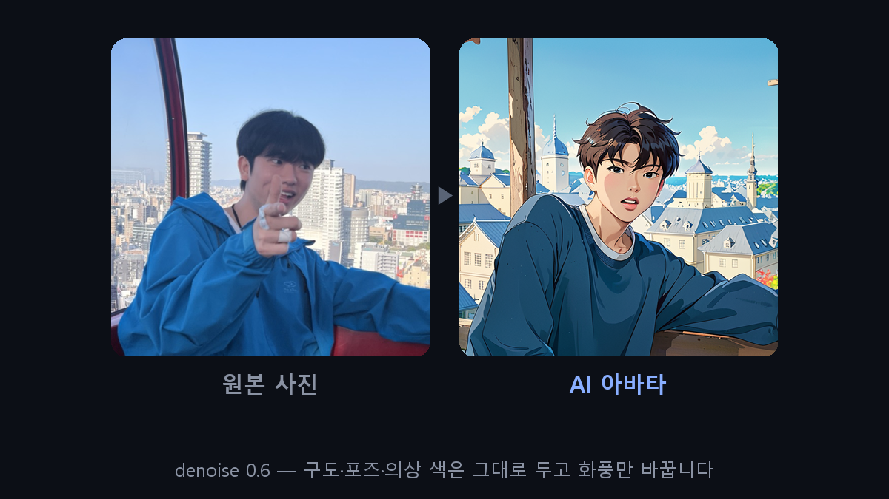
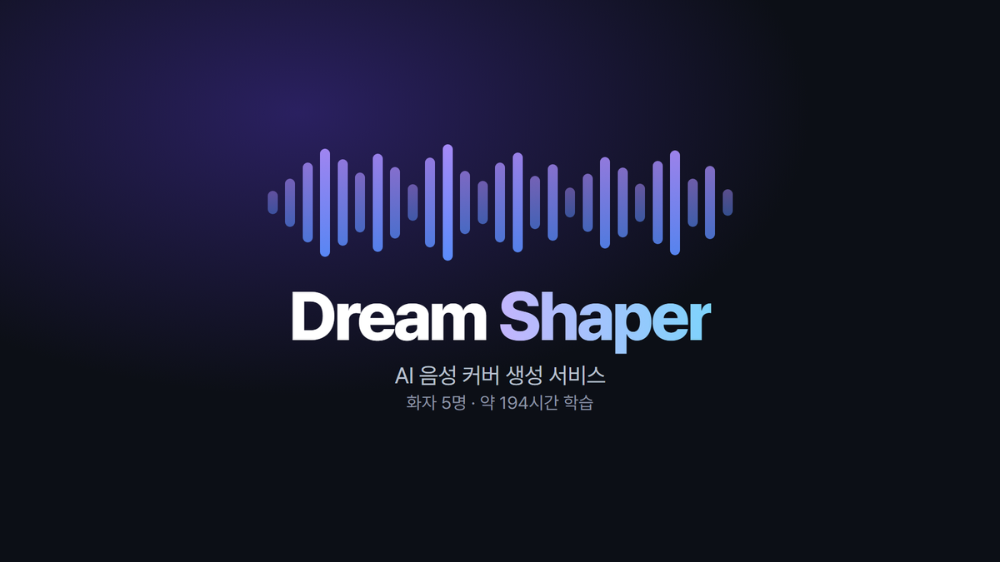
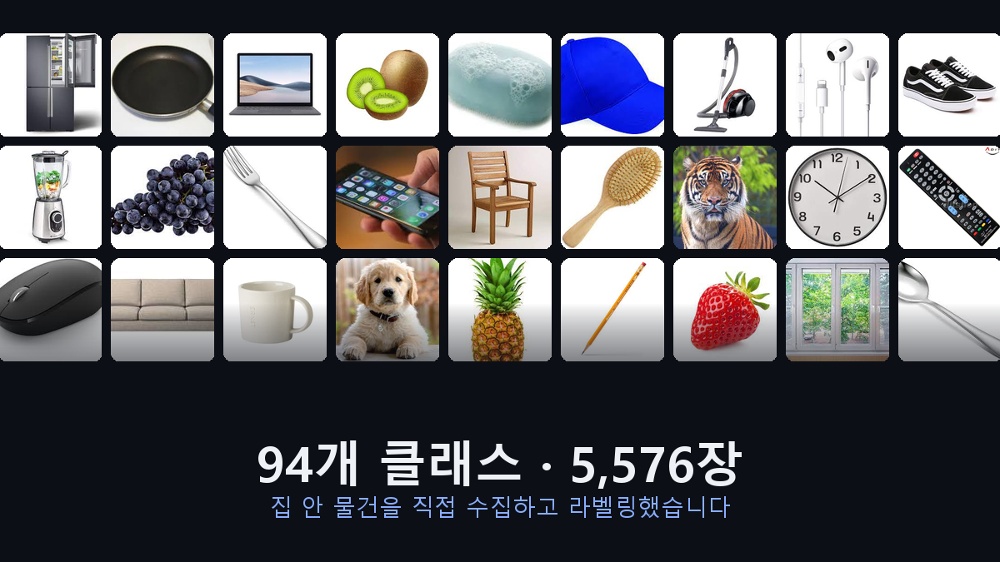
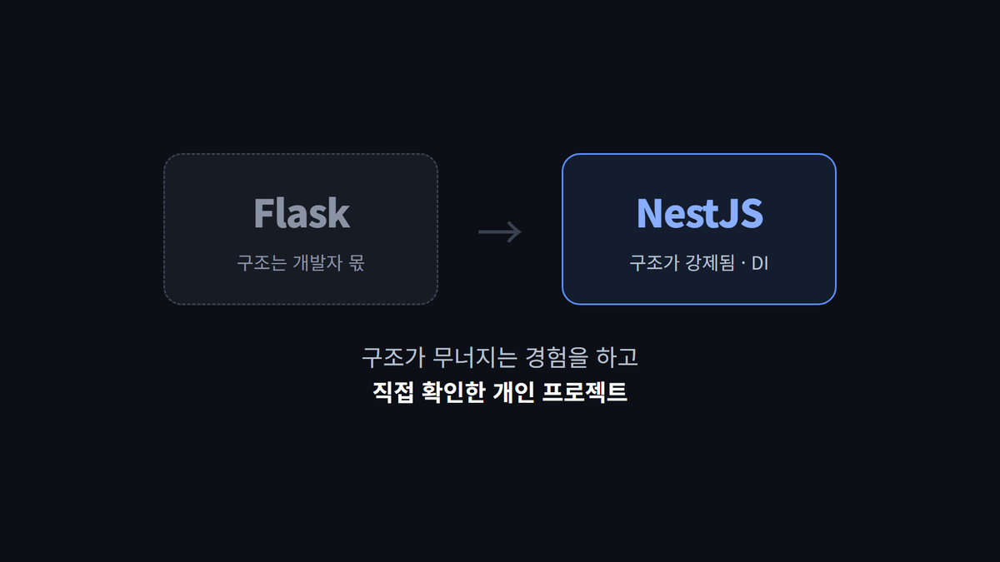
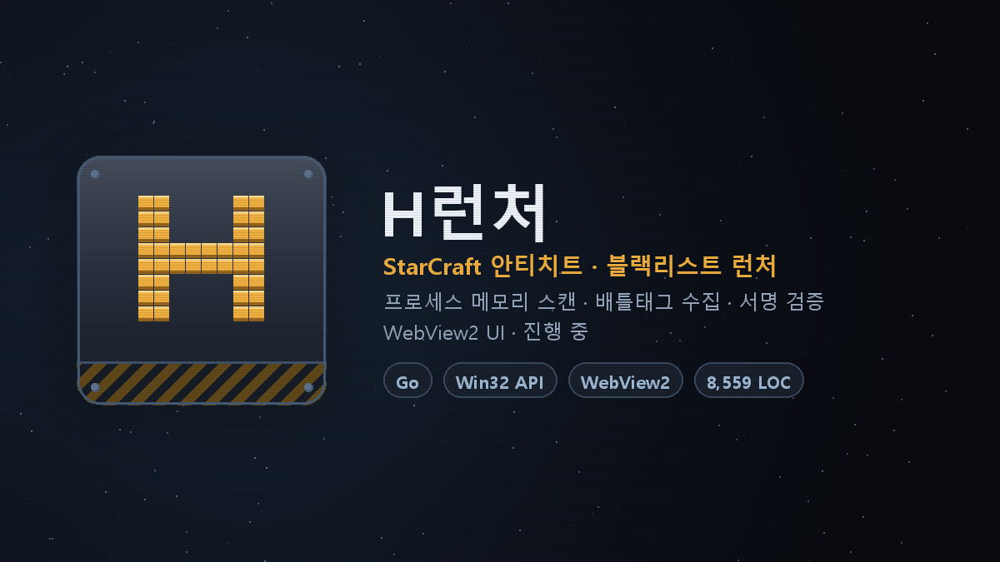
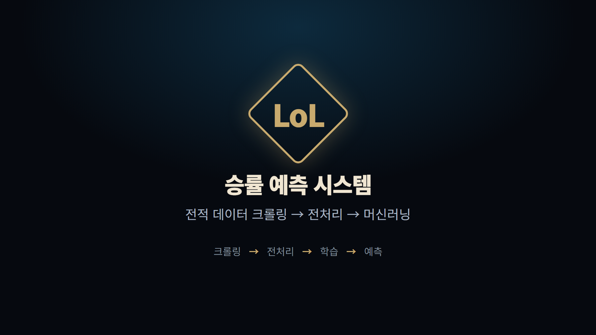

익숙한 방법보다, 새로운 방법을 먼저 시도합니다. 레퍼런스가 부족한 문제에서도 직접 방법을 찾고, 실패하면 접근을 바꿔 해결해 왔습니다. 픽셀 스프라이트 자동 생성부터 음성 변환 서비스까지 AI 모델 학습에서 백엔드 연동, 실제 서비스까지 직접 구현했습니다.
각 카드를 누르면 설계 판단·실측값·한계까지 정리한 상세 페이지로 이동합니다.








프로젝트를 관통하는 두 가지입니다.
Emour에서 커플 문장 gold셋 macro-F1 0.73 을 기록한 모델을 배포했습니다. 그런데 실제 대화 흐름에 적용하자 0.175로 급락했습니다.
평가 체계를 다시 설계하는 과정에서 평가셋 오염으로 점수가 뒤집히는 현상도 발견했습니다. 우리가 만든 데이터가 test에 섞이면 새 모델이 자동으로 유리해집니다. 비교 기준을 우리 데이터를 전혀 학습하지 않은 모델로 고정해 데이터 누수를 0으로 만든 뒤에야 「2.2배 개선」이 방어할 수 있는 수치가 됐습니다.
이 습관은 지표를 남기지 않아 아쉬웠던 2023년 「엄마 이게뭐야」의 경험에서 나왔습니다. 그때는 개선 여부를 육안으로만 판단했고, mAP를 before/after로 기록하지 않았습니다.
세 번 다 제 담당이 아니었습니다. 맡지 않아도 되는 자리였고, 맡겠다고 한 건 제 선택이었습니다.
| 언제 | 그때 비어 있던 것 | 내가 한 선택 |
|---|---|---|
| Emour 마감 1주일 전 |
팀의 감정 분류 모델이 서비스에 쓸 수 없는 수준이었고, 남은 일정 안에 손댈 사람이 없었습니다 | 제가 하겠다고 했습니다. 1주일 안에 4차까지 반복하고 테스트 서버를 배포해 291명 실사용 검증까지 마쳤습니다 |
| Dream Shaper 남은 2주 |
백엔드 인력이 빠지면서 서버가 통째로 비었습니다 | 남은 일정 안에 끝낼 수 있는 쪽으로 FastAPI를 골라 AI 서버를 직접 세웠습니다. 기술 취향이 아니라 마감이 기준이었습니다 |
| H런처 진행 중 |
쓰던 안티치트 런처가 단종돼 대체재가 사라졌습니다 | Go도 Win32도 처음 보는 판이었지만 그대로 걸어 들어갔습니다. 단종된 제품을 분석해 재구현 중이고, 지금 8,559줄입니다 |
3년에 걸쳐 같은 문제를 세 번 만났고, 매번 지켜야 할 것이 달라 답도 달랐습니다.
| 프로젝트 | 방식 | 우선한 것 |
|---|---|---|
| Dream Shaper 2023.09 |
클라이언트 → S3 직접 | 서버가 대용량 음원 트래픽에서 빠지는 것 |
| Blind Dating 2026.06 |
워커 → 백엔드 → S3 | GPU 서버에 자격증명을 두지 않는 것 — 일부러 반대로 갔습니다 |
| Emour 2026.08 |
FileStorage 인터페이스 추상화 |
DB에 전체 URL이 아니라 key만 저장해 저장소 이전 비용을 없애는 것 |
2022년부터 교육 과정 4개를 이수했고, 배운 것은 매번 그 자리에서 프로젝트로 나왔습니다.
실제로 프로젝트에 적용한 것만 적었습니다.
| 구분 | 기술 | 어디서 썼는가 |
|---|---|---|
| 언어 | Python · Java 17 · TypeScript · JavaScript | — |
| 백엔드 | Spring Boot · Django / DRF · FastAPI · NestJS · Flask | Emour · Blind Dating · Dream Shaper · SNS Clone · 엄마 이게뭐야 |
| 인증 / 보안 | JWT (Access·Refresh 분리) · OAuth 2.0(Google) · BCrypt · Spring Security | Emour — Refresh만 Redis에 TTL 저장해 토큰 회수 수단 확보, 계정 열거 방지 |
| 실시간 통신 | WebSocket (STOMP) · Django Channels · channels-redis | Blind Dating — BaseMiddleware 상속해 쿼리스트링 JWT 인증 직접 구현 |
| 데이터베이스 | MySQL · PostgreSQL · Redis · SQLite · MongoDB | — |
| ORM | Spring Data JPA / Hibernate · Django ORM · TypeORM | 세 프레임워크 모두 실전 사용 |
| NLP | KcELECTRA · HuggingFace Transformers · kiwipiepy | Emour — 감정 15종 분류, 문장쌍 맥락 인코딩 |
| Vision | YOLOv8 · MediaPipe · SAM · IP-Adapter FaceID · InsightFace | 엄마 이게뭐야 커스텀 학습 · Blind Dating 아바타 생성 |
| 생성형 AI | Stable Diffusion (SD1.5 / SDXL) · LoRA · ControlNet · AnimateDiff · ComfyUI · DALL·E 2 | PixG · Blind Dating · Dream Shaper |
| 음성 | SVC · RVC · HuBERT · NSF-HiFiGAN · UVR5 | Dream Shaper — 화자 5명 모델 학습 |
| 인프라 | AWS S3 · EC2 · Docker · Docker Compose · GitLab CI/CD · Linux GPU 서버 | — |
알고리즘 — 백준 골드 3~4 티어
Emour에서 학습한 한국어 감정 분류 모델을 HuggingFace에 공개했습니다.
| 모델 | 단계 | test macro-F1 |
|---|---|---|
emour-emotion-kcelectra |
문장 단위 (baseline) | — |
-context |
맥락 인식 | 0.387 (n=111) |
-context-v2 |
맥락 + 실사용자 로그 재학습 | 0.5065 (n=660) |
두 맥락 모델의 점수는 서로 다른 test 분할에서 측정한 것이라 직접 비교할 수 없습니다. 누수 없는 동일 기준에서 방어되는 수치는 0.175 → 0.39 (2.2배) 입니다.